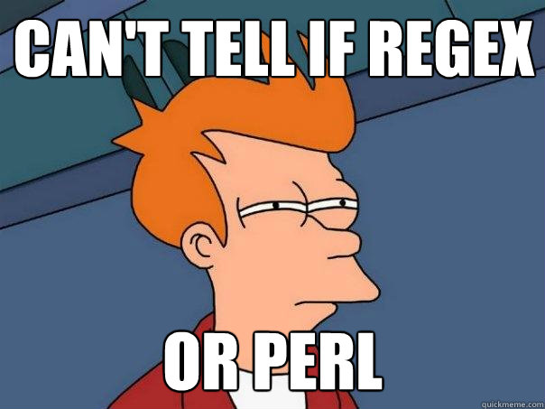
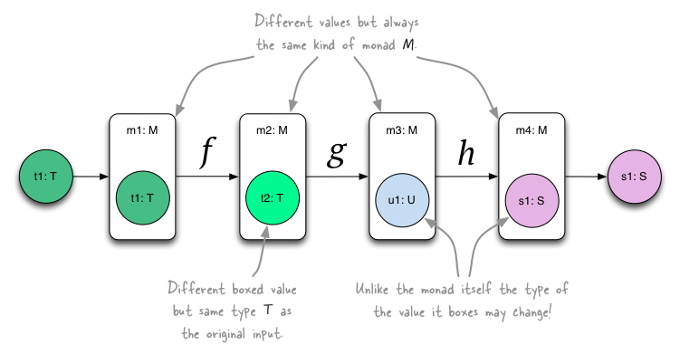
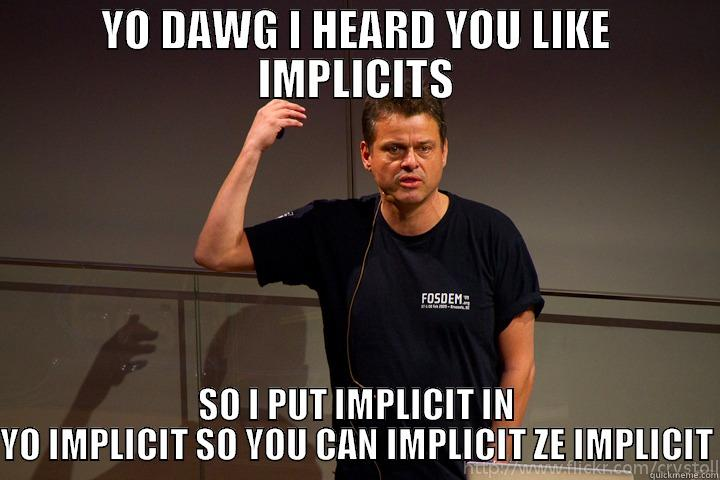

Advanced Topics
- Operators
- Monoids and Monads
- Generics
- Bounds
- Variance
- Implicits
- Polymorphism
Operators
Operators are functions
// use :paste mode in Scala console
class Vec(val data: Seq[Double]) {
def +(rhs: Vec): Vec = new Vec(data.zip(rhs.data).map(t => t._1 + t._2))
def *(scalar: Double): Vec = new Vec(this.data.map(_ * scalar))
override def toString: String = "Vec(" + data.mkString(",") + ")"
}
object Vec { // companion object
def apply(data: Double*) = new Vec(data)
}
Vec(0.1, 0.2) + Vec(1.0, 2.0) // Vec.+(Vec), infix operator
Vec(0.1, 0.2) * 2.0 // Vec.*(2.0)
Operators
Associativity
1 + 2 + 3 + 4 == ((1 + 2) + 3) + 4
1 * 2 * 3 * 4 == ((1 * 2) * 3) * 4
1 :: 2 :: 3 :: Nil == 1 :: (2 ::(3 :: Nil))
2 :: Nil == Nil.::(2) // .::() is a method of Nil
1 +: List(2, 3) == List(2, 3).+:(1) // .+:() is a mmethod of List
Operators
Binary operator properties
- Associative - \((ab)c = a(bc)\)
- Commutative - \(ab = ba\)
- Affect fold/reduce left or right
- Also whether collection is parallelizable
Operators
:: ::: +: :+ ++: :++ /: :\ % %% ...
Do not overuse!
Operators
Christmas Tree
// lots of operator overloading...
// ...
object ChristmasTree extends DecorationBuilder {
def main(args: Array[String]) {
\-/.
-->*<--
.
/.\
./.|.\.
/.oxo.\
./.*.|.x.\.
/.oo.|.oo.\
./.oxo.|.***.\.
/.*.oo.|.*.oo.\.
|||
}
}
Do not attempt at home!
Operators
Exercises
- Write a class for complex number
- Write methods for \(+\) and \(\times\)
- Make sure they support
Doubletoo - How about
doubleopcomplex?
Monoids and Monads
Monoid definition
- A set \(S\) and a binary function \(\bullet\) of \(S \times S \rightarrow S\)
- Closure - \(\forall a, b \in S: a \bullet b \in S\)
- Associativity - \(\forall a, b, c \in S: (a \bullet b) \bullet c = a \bullet (b \bullet c)\)
- Identity element - \(\exists e \in S: e \bullet a = a \bullet e = a\)
Monoids and Monads
Monoid examples
- \(S =\) natural numbers, \(\bullet = +, e = 0\) or \(\bullet = \times, e = 1\)
- \(S =\) finite strings with alphabet \(\Sigma\), \(\bullet = concat, e = ""\)
- \(S =\) sets, \(\bullet = union, e = \emptyset\)
- Algebird
BloomFilter,SGDMonoid, ... - For some cases of \(S =\)
T, \(\bullet =\)op, \(e =\)zin
foldLeft[T](z: T)(op: (T, T) => T): T List(10, 20, 30).foldLeft(0)(_+_)
List(10, 20, 30).reduce(_+_)List(10, 20, 30).foldLeft(1)(_*_)
List(10, 20, 30).reduce(_*_)
Monoids and Monads
Monoid illustrated

Monoids and Monads
Distributed
Sum
List(1, 2, 3, 4, 5, 6).reduce(_ + _)- (1 + 2) + (3 + 4) + (5 + 6)
- (1 + 2 + 3) + (4 + 5 + 6)
- (1 + 3 + 5) + (2 + 4 + 6)
Any order, multiple steps
Perfect for an unordered, parallel collection
pipe // of type [(String, Int)]
.group // by key String with values {Int, Int, ...}
.reduce(_ + _) // happens both on mapper and reducer side
Monoids and Monads
Distributed
Distinct
List(1, 1, 1, 2, 2, 3).map(x => Set(x)).reduce(_ ++ _).size- ({1} ++ {1}) ++ ({1} ++ {2}) ++ ({2} ++ {3})
- ({1} ++ {1} ++ {1}) ++ ({2} ++ {2} ++ {3})
- ({1} ++ {2} ++ {3}) ++ ({1} ++ {1} ++ {2})
// mapFn: input type T to intermediate, reduceable type X
// redFn: binary operator
// mapFn2: X to output type U
def mapReduceMap[T, X, U](mapFn: T => X)(redFn: (X, X) => X)(mapFn2: X => U)
Monoids and Monads
User artists as a monoid
abstract class UserArtists { // S
def getArtists: Set[String]
def +(that: UserArtists): UserArtists // binary function
}
case class UserArtistsEmpty() extends UserArtists { // e
override def getArtists: Set[String] = Set[String]()
override def +(that: UserArtists): UserArtists = that
}
case class UserArtistsFull(artists: Set[String]) extends UserArtists {
override def getArtists: Set[String] = artists
override def +(that: UserArtists): UserArtists = that match {
case that: UserArtistsEmpty => this
case that: UserArtistsFull => {
UserArtistsFull(this.artists ++ that.artists)
}
}
}
Monoids and Monads
Semigroup and group
- Semigroup - Monoid without identity element
- Group - Monoid with inverse \(\forall a \in S: \exists b \in S \rightarrow a \bullet b = b \bullet a = e\)
Monoids and Monads
Monad definition
- A monad
Membeds an underlying typeT - Type constructor:
T⇒M[T](generics!) - Unit function:
fn: T => M[T] - Binding operation:
m: M[T],op: T => M[U]⇒M[U]
In short, identity and associativity, just like monoid
Monoids and Monads
Monad examples
// from Algebird
trait Monad[M[_]] {
// Also called `unit` (in papers) or `return` (in Haskell).
def apply[T](v: T): M[T]
// Also called `bind` (in papers) or `>>=` (in Haskell).
def flatMap[T, U](m: M[T])(fn: (T) => M[U]): M[U]
}
// Option[T] is a monad
Option
.apply[Int](10) // T => M[T] where T == Int and M == Option
.flatMap { t => // T => M[U] where U = String
Option.apply[String](t.toString)
}
Monoids and Monads
Future is monad
ListenableFuture<T> // M = ListenableFuture
ListenableFuture<T> f1 = Futures.immediateFuture(T value); // unit function
// binding operation
ListenableFuture<U> f2 = Futures.transform(f, new Function<T, U>() {
public U apply(T value) {
U result;
// computation...
return result;
}
});
Monoids and Monads
Monad illustrated
Generics
Generic classes
// types of member key and value unknown and parameterized
class KeyVal[K, V](val key: K, val value: V)
val one = new KeyVal("one", 1) // KeyVal[String, Int]
val genericOne = new KeyVal[Any, Any]("one", 1) // KeyVal[Any, Any]
- Most Scala library APIs are generic
sealed abstract class List[+A] ...
Generics
Generic functions
// function definition with type parameter
def getMiddle[T](a: Array[T]) = a(a.length / 2)
val line = Array("We", "all", "live", "in", "Amerika")
getMiddle(line) // getMiddle[String]
Specialized versions
val getMiddleString = getMiddle[String] _
getMiddleString(line) // getMiddle[String]
val getMiddleInt = getMiddle[Int] _
getMiddleInt(line) // error!
Generics
Tuples are generic classes
// use :paste mode in Scala console
class Tuple1[T1](val _1: T1)
class Tuple2[T1, T2](val _1: T1, val _2: T2)
// ...
// class Tuple22[T1, ..., T22](val _1: T1, ... , val _22: T22)
With companion objects
object Tuple1 {
def apply[T1](v1: T1) = new Tuple1(v1)
}
object Tuple2 {
def apply[T1, T2](v1: T1, v2: T2) = new Tuple2(v1, v2)
}
// ...
Tuple2("A", 1) // Tuple2[String, Int].apply("A", 1)
Pair<K,V>, Tuple3<V1,V2,V3>, Tuple4<V1,V2,V3,V4>, TupleN
Generics
So are functions
// use :paste mode in Scala console
trait Function1[T1, R] {
def apply(v1: T1): R // abstract method
}
trait Function2[T1, T2, R] {
def apply(v1: T1, v2: T2): R // abstract method
}
// ...
// trait Function22[T1, ..., T22, R] {
// def apply(v1: T1, ..., v22: T22): R
// }
object add extends Function2[Int, Int, Int] {
def apply(v1: Int, v2: Int): Int = v1 + v2
}
add(10, 20) // add.apply(10, 20)
Bounds
Upper bounds
class Band(val name: String)
class MetalBand(name: String, val flameThrower: Boolean) extends Band(name)
class HipsterBand(name: String, val banjo: Boolean) extends Band(name)
class SetList[T <: Band](bands: T*) {
val runningOrder = List(bands)
}
val rammstein = new MetalBand("Rammstein", true)
val mumford = new HipsterBand("Mumford & Sons", true)
new SetList(rammstein, mumford) // SetList[Band]
case class Guitar(strings: Int)
new SetList(Guitar(7), Guitar(8)) // fail, Guitar is not Band
Bounds
Bounds for type interface
class Pair[T](val first: T, val second: T) {
// error: value compareTo is not a member of type parameter T
def smaller = if (first.compareTo(second) < 0) first else second
}
// T with upper bound Comparable[T], i.e. T is a subtype of Comparable[T]
class Pair[T <: Comparable[T]](val first: T, val second: T) {
def smaller = if (first.compareTo(second) < 0) first else second
}
new Pair("Amerika", "wunderbar").smaller // success!
new Pair(42, 666).smaller // fail! Int not Comparable[Int]
Bounds
View bounds
// Int is not Comparaple[Int]
// However Int can be implicitly converted to RichInt with Comparable[Int]
// T <% Comparaple[T] -> T is viewable as Comparable[T]
class Pair[T <% Comparable[T]](val first: T, val second: T) {
def smaller = if (first.compareTo(second) < 0) first else second
}
new Pair(42, 666).smaller // success!
// Ordered[T] has comparison operators
class Pair[T <% Ordered[T]](val first: T, val second: T) {
def smaller = if (first < second) first else second
}
new Pair("Amerika", "wunderbar").smaller
new Pair(42, 666).smaller
Bounds
Lower bounds
class Pair[T](val first: T, val second: T) {
// no restriction, R can be anything, return type is Pair[Any]
def replaceFirst[R](newFirst: R) = new Pair(newFirst, second)
// R is supertype of T, return type is Pair[R]
def replaceFirstSafe[R >: T](newFirst: R) = new Pair(newFirst, second)
}
val reiter = new MetalBand("Die Apokalyptischen Reiter", true)
val p = new Pair(rammstein, reiter ) // Pair[MetalBand]
p.replaceFirst(mumford) // Pair[Any]
p.replaceFirstSafe(mumford) // Pair[Band]
Variance
An example
class Band
class MetalBand extends Band
val b: Band = new MetalBand // success!
class Concert[T <: Band]
// fail! Concert[MetalBand] is not subtype of Concert[Band]
val c: Concert[Band] = new Concert[MetalBand]
class Concert[+T <: Band]
// success! Concert[T'] is subtype of Concert[T] (where T' extends T)
val c: Concert[Band] = new Concert[MetalBand]
Variance
{Co/contra/in}variant
B extends A→Bis subtype ofAC[+A]→ covariant,C[B]is subtype ofC[A]C[A]→ invariant,C[B]andC[A]are unrelatedC[-A]→ contravariant,C[B]is supertype ofC[A]
Variance
Covariant
- Most Scala collections have coveriant type variable
List[+A],Set[+A],Map[A, +B]...
Variance
Contravariant
// Scala functions have contravariant arguments
// trait Function1[-T1, +R]
class Band
class MetalBand extends Band
def playMusic(b: Band) = "call me maybe"
def playMetal(b: MetalBand) = "RAWR!!!" // accepts Band, more generic
val play: Band => String = playMusic // same type, fine
// fail! playMetal does not accept Band argument type
val play: Band => String = playMetal
// success! playMusic accepts MetalBand argument type
val play: MetalBand => String = playMusic
Implicits
Implicits
Conversions
class Band(val name: String)
class MetalBand(name: String) extends Band(name)
val one = new Band("One Direction")
def playMetal(b: MetalBand) = b.name + " RAWR!"
playMetal(one) // fail!
implicit def metallize(b: Band) = new MetalBand(b.name.replace("O", "Ö"))
playMetal(one) // playMetal(metallize(one))
Implicits
Pimp my library
// library code
class TopHit(val line: String) {
def sing = line + "!"
}
class MetalTopHit(t: TopHit) {
def rawr = t.line.toUpperCase + " RAWR!"
}
object Implicits {
implicit def makeMetalTopHit(t: TopHit) = new MetalTopHit(t)
}
// application code
import Implicits._
val t = new TopHit("call me maybe")
t.sing // TopHit.sing
// .rawr not defined on TopHit, but on MetalTopHit
t.rawr // makeMetalTopHit(t).rawr
Implicits
Uses
RichInt,RichDouble, etc. forInt,Double...StringOpsforStringwith indexed sequence methodsscala.collection.JavaCoverters._- Spark
PairRDDFunctionsforRDD
Implicit
Exercises
- Implement support for
doubleopcomplex - Pimp
Stringwith atoComplexmethod
Polymorphism
Parametric polymorphism
def head[A](xs: List[A]): A = xs(0)A
head(1 :: 2 :: Nil)A is Int
case class Band(name: String)
head(Band("Carcass") :: Band("Immortal") :: Nil)
A is Band
A directly
Polymorphism
Sub-type polymorphism
def plus[A](a1: A, a2: A): A = ???a1 + a2 since not all types of A have method +Type of
A is unknown at compile time, unlike C++ templates
trait Plus[A] {
def plus(a2: A): A
}
Plus[A] to be implemented by all sub-types of A
def plus[A <: Plus[A]](a1: A, a2: A): A = a1.plus(a2)a1 is sub-type of Plus[A] with plus(a2: A)
A with Plus[A]!
Polymorphism
Ad-hoc polymorphism
trait Plus[A] { // a.k.a. type class
def plus(a1: A, a2: A): A
}
Plus[A] independently and not mix-in with A
implicit object PlusInt extends Plus[Int] {
def plus(a1: Int, a2: Int): Int = a1 + a2
}
Plus[Int] that can be used as an context for Int
// implicit evidence that there exists Plus[A] for A
def plus[A](a1: A, a2: A)(implicit ev: Plus[A]): A = ev.plus(a1, a2)
// shorthand, a.k.a. context bound
def plus[A : Plus](a1: A, a2: A): A = implicitly[Plus[A]].plus(a1, a2)
a1 is sub-type of Plus[A] with plus(a2: A)
Plus[A] for any A, without access to A's source code or extending it
Polymorphism
Type classes
Numeric for Int, Double, etc., Ordering for any Numeric, String, etc.
def add[T : Numeric](x: T, y: T): T = implicitly[Numeric[T]].plus(x, y)
add(1, 2) // Numeric[Int].plus(x: Int, y: Int)
add(1.0, 2.0) // Numeric[Double].plus(x: Double, y: Double)
def max[T](x: T, y: T)(implicit ev: Ordering[T]): T =
if (ev.lt(x, y)) y else x
max(1, 2) // Ordering[Int].lt(x: Int, y: Double)
max("1", "2") // Ordering[String].lt(x: String, y: String)
That's It
Further reading
- Scala collection API
- Twitter's Effective Scala
- Article, video and video
on monoids and monads